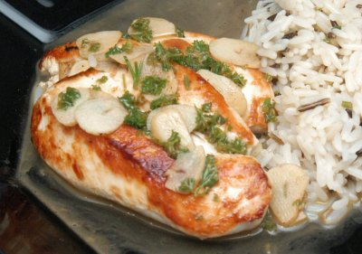

| Zutaten für 4 Portionen: | |
| 1 | Zitrone |
| 2 - 3 | Knoblauchzehen |
| 2 EL | Pflanzenöl |
| 40 g | Butter |
| 4 | Hänchenbrustfilets ohne Haut |
| 3-4 EL | gehackte, frische glatte Petersilie oder Estragon |
| Salz, Pfeffer) | |
Vorbereitung: 10 Minuten
Garen: 20 Minuten
Den Knoblauch schälen und in dünne Scheiben schneiden. Die Zitronenschale mit einem Zestenreisser in feinen Streifen abziehen. Den Saft einer Zitronenhälfte auspressen.
Das Öl und die Butter bei niedriger Temperatur in der Pfanne erhitzen. Das Hänchenfleisch hinzugeben und auf jeder Seite etwa 10 Minuten braten. Dann herausnehmen, auf einen Teller legen und warm halten.
Knoblauch 30 Sekunden braten. 2 EL Wasser, Schale und Saft der Zitrone sowie Petersilie hinzufügen, würzen und 1 Minute erhitzen. Mit einem Löffel auf dem Fleisch verteilen.
Mit Kartoffelstock oder gedämpftem grünen Gemüse servieren.
pro Portion: 15g Fett, 34g Eiweiss, 2g Kohlenhydrate, 0.5g Ballaststoffe, 0.3g Natrium, 1185 kJ, 280 kcal
Irgend so ein Junk Mail Rezeptsammelding, 2001
31.10.2004 Ist OK. Zitronenschale will niemand essen also muss das weg. Die Zitronensauce schmeckt gut. Genug davon machen.
@LINKBACK_TAG@ @WAKELOCK@